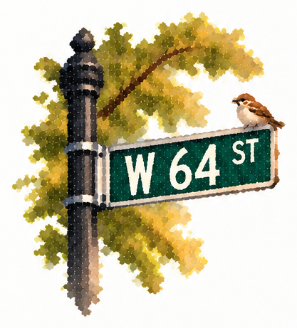
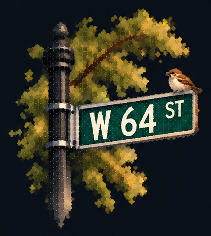

Barney J. Smith


I’m an incoming Founder in Residence at Entrepreneurs First. I study Business, Marketing & Analytics at the George Washington University, alongside Ethics at Georgetown University.
Previously, I’ve worked across technology, product, and design with Figma, L’Oréal, HumanX, and local government.
At L’Oréal, I developed a men’s grooming product that won #1 in the U.S. and placed Top 10 globally among 242,000+ participants, representing Team USA in Paris.
I also worked as a Data Analyst in renewable energy, supporting projects that generated $11.5M+ in real estate value, and built Mocha, adaptive AI interview software used by 3,000+ students across 23 universities.